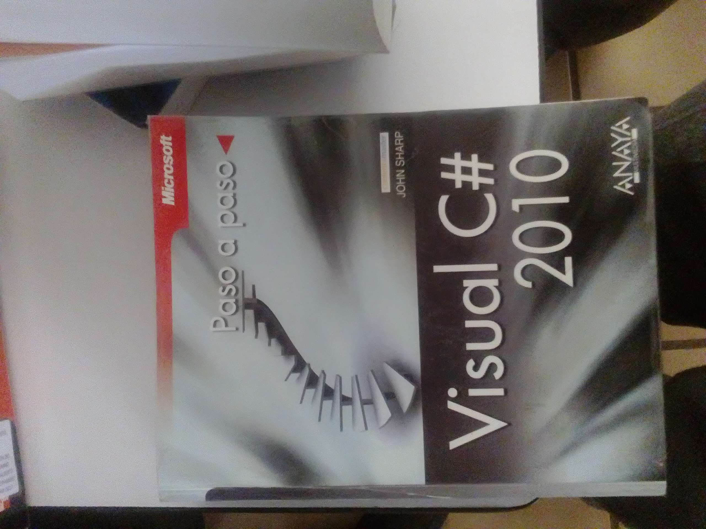

puedes consultar el libro aqui!!
Autor
JOHN SHARP
Editorial Anaya Multimedia

consultar libro
comprar el libro

link de descarga PDF

Contenido
0. Conceptos básicos sobre programación_______________________________________________6
0.1. Lenguajes de alto nivel y de bajo nivel._____________________________________________________ 6
0.2. Ensambladores, compiladores e intérpretes _________________________________________________ 8
0.3. Pseudocódigo __________________________________________________________________________ 9
1. Toma de contacto con C#__________________________________________________________10
1.1 Escribir un texto en C# _________________________________________________________________ 10
1.2. Cómo probar este programa con Mono ___________________________________________________ 12
1.3. Mostrar números enteros en pantalla _____________________________________________________ 18
1.4. Operaciones aritméticas básicas _________________________________________________________ 19
1.4.1. Orden de prioridad de los operadores___________________________________________________19
1.4.2. Introducción a los problemas de desbordamiento__________________________________________19
1.5. Introducción a las variables: int__________________________________________________________ 20
1.5.1. Definición de variables: números enteros________________________________________________20
1.5.2. Asignación de valores_______________________________________________________________20
1.5.3. Mostrar el valor de una variable en pantalla______________________________________________21
1.6. Identificadores________________________________________________________________________ 22
1.7. Comentarios__________________________________________________________________________ 23
1.8. Datos por el usuario: ReadLine __________________________________________________________ 24
2. Estructuras de control_____________________________________________________________26
2.1. Estructuras alternativas ________________________________________________________________ 26
2.1.1. if________________________________________________________________________________26
2.1.2. if y sentencias compuestas____________________________________________________________27
2.1.3. Operadores relacionales: <, <=, >, >=, ==, !=_____________________________________________28
2.1.4. if-else____________________________________________________________________________29
2.1.5. Operadores lógicos: &&, ||, !__________________________________________________________31
2.1.6. El peligro de la asignación en un "if"____________________________________________________31
2.1.7. Introducción a los diagramas de flujo___________________________________________________32
2.1.8. Operador condicional: ?______________________________________________________________34
2.1.10. switch___________________________________________________________________________35
2.2. Estructuras repetitivas _________________________________________________________________ 39
2.2.1. while____________________________________________________________________________39
2.2.2. do ... while________________________________________________________________________40
2.2.3. for______________________________________________________________________________42
2.3. Sentencia break: termina el bucle ________________________________________________________ 46
2.4. Sentencia continue: fuerza la siguiente iteración ____________________________________________ 47
2.5. Sentencia goto ________________________________________________________________________ 49
2.6. Más sobre diagramas de flujo. Diagramas de Chapin.________________________________________ 50
2.7. El caso de "foreach" ___________________________________________________________________ 52
2.8. Recomendación de uso para los distintos tipos de bucle ______________________________________ 52
3. Tipos de datos básicos_____________________________________________________________54
3.1. Tipo de datos entero y carácter __________________________________________________________ 54
3.1.1. Tipos de datos para números enteros____________________________________________________54
3.1.2. Conversiones de cadena a entero_______________________________________________________54
3.1.3. Incremento y decremento_____________________________________________________________55
3.1.4. Operaciones abreviadas: +=___________________________________________________________56
3.2. Tipo de datos real _____________________________________________________________________ 56
3.2.1. Simple y doble precisión_____________________________________________________________57
3.2.2. Mostrar en pantalla números reales_____________________________________________________57
3.2.3. Formatear números_________________________________________________________________58
3.3. Tipo de datos carácter__________________________________________________________________ 60
3.3.1. Secuencias de escape: \n y otras._______________________________________________________61
3.4. Toma de contacto con las cadenas de texto_________________________________________________ 63
3.5. Los valores "booleanos"________________________________________________________________ 64
4. Arrays, estructuras y cadenas de texto________________________________________________66
4.1. Conceptos básicos sobre arrays o tablas ___________________________________________________ 66
4.1.1. Definición de un array y acceso a los datos_______________________________________________66
4.1.2. Valor inicial de un array_____________________________________________________________67
4.1.3. Recorriendo los elementos de una tabla__________________________________________________68
4.1.4. Datos repetitivos introducidos por el usuario______________________________________________69
4.2. Tablas bidimensionales_________________________________________________________________ 70
4.3. Estructuras o registros _________________________________________________________________ 73
4.3.1. Definición y acceso a los datos________________________________________________________73
4.3.2. Arrays de estructuras________________________________________________________________74
4.3.3. Estructuras anidadas________________________________________________________________75
4.4. Cadenas de caracteres__________________________________________________________________ 76
4.4.1. Definición. Lectura desde teclado______________________________________________________76
4.4.2. Cómo acceder a las letras que forman una cadena__________________________________________77
4.4.3. Longitud de la cadena._______________________________________________________________77
4.4.4. Extraer una subcadena_______________________________________________________________78
4.4.5. Buscar en una cadena________________________________________________________________78
4.4.6. Otras manipulaciones de cadenas______________________________________________________78
4.4.7. Comparación de cadenas_____________________________________________________________81
4.4.8. Una cadena modificable: StringBuilder__________________________________________________82
4.4.9. Recorriendo con "foreach"____________________________________________________________83
4.5 Ejemplo completo______________________________________________________________________ 84
4.6 Ordenaciones simples___________________________________________________________________ 88
5. Introducción a las funciones_______________________________________________________93
5.1. Diseño modular de programas: Descomposición modular ____________________________________ 93
5.2. Conceptos básicos sobre funciones________________________________________________________ 93
5.3. Parámetros de una función______________________________________________________________ 95
5.4. Valor devuelto por una función. El valor "void". ___________________________________________ 96
5.5. Variables locales y variables globales _____________________________________________________ 98
5.6. Los conflictos de nombres en las variables ________________________________________________ 100
5.7. Modificando parámetros ______________________________________________________________ 101
5.8. El orden no importa __________________________________________________________________ 103
5.9. Algunas funciones útiles _______________________________________________________________ 104
5.9.1. Números aleatorios________________________________________________________________104
5.9.2. Funciones matemáticas_____________________________________________________________105
5.9.3. Pero hay muchas más funciones…____________________________________________________106
5.10. Recursividad _______________________________________________________________________ 106
5.11. Parámetros y valor de retorno de "Main" _______________________________________________ 108
6. Programación orientada a objetos__________________________________________________111
6.1. ¿Por qué los objetos? _________________________________________________________________ 111
6.2. Objetos y clases en C#_________________________________________________________________ 112
6.3. La herencia. Visibilidad _______________________________________________________________ 117
6.4. ¿Cómo se diseñan las clases? ___________________________________________________________ 121
6.5. La palabra "static"___________________________________________________________________ 122
6.6. Constructores y destructores.___________________________________________________________ 123
6.7. Polimorfismo y sobrecarga_____________________________________________________________ 126
6.8. Orden de llamada de los constructores ___________________________________________________ 126
6.9. Arrays de objetos_____________________________________________________________________ 128
6.10. Funciones virtuales. La palabra "override"______________________________________________ 132
6.11. Llamando a un método de la clase "padre" ______________________________________________ 136
6.12. La palabra "this": el objeto actual _____________________________________________________ 138
6.13. Sobrecarga de operadores ____________________________________________________________ 139
6.14. Proyectos a partir de varios fuentes_____________________________________________________ 139
7. Manejo de ficheros______________________________________________________________145
7.1. Escritura en un fichero de texto_________________________________________________________ 145
7.2. Lectura de un fichero de texto __________________________________________________________ 146
7.3. Lectura hasta el final del fichero ________________________________________________________ 147
7.4. Añadir a un fichero existente ___________________________________________________________ 148
7.5. Ficheros en otras carpetas _____________________________________________________________ 149
7.6. Saber si un fichero existe ______________________________________________________________ 149
7.7. Más comprobaciones de errores: excepciones _____________________________________________ 150
7.8. Conceptos básicos sobre ficheros________________________________________________________ 153
7.9. Leer datos básicos de un fichero binario__________________________________________________ 154
7.10. Leer bloques de datos de un fichero binario______________________________________________ 155
7.11. La posición en el fichero ______________________________________________________________ 156
7.12. Escribir en un fichero binario _________________________________________________________ 158
7.13. Ejemplo: leer información de un fichero BMP____________________________________________ 162
7.14. Leer y escribir en un mismo fichero binario______________________________________________ 166
8. Punteros y gestión dinámica de memoria____________________________________________169
8.1. ¿Por qué usar estructuras dinámicas?____________________________________________________ 169
8.2. Una pila en C#_______________________________________________________________________ 170
8.3. Una cola en C#_______________________________________________________________________ 171
8.4. Las listas____________________________________________________________________________ 172
8.4.1. ArrayList________________________________________________________________________172
8.4.2. SortedList________________________________________________________________________175
8.5. Las "tablas hash" ____________________________________________________________________ 176
8.6. Los "enumeradores"__________________________________________________________________ 178
8.7. Cómo "imitar" una pila usando "arrays" ________________________________________________ 180
8.8. Los punteros en C#.___________________________________________________________________ 182
8.8.1 ¿Qué es un puntero?________________________________________________________________182
8.8.2 Zonas "inseguras": unsafe____________________________________________________________182
8.8.3 Uso básico de punteros______________________________________________________________183
8.8.4 Zonas inseguras___________________________________________________________________184
8.8.4 Reservar espacio: stackalloc__________________________________________________________185
8.8.5 Aritmética de punteros______________________________________________________________185
8.8.6 La palabra "fixed"__________________________________________________________________187
9. Otras características avanzadas de C#_______________________________________________189
9.1. Espacios de nombres__________________________________________________________________ 189
9.2. Operaciones con bits__________________________________________________________________ 191
9.3. Enumeraciones ______________________________________________________________________ 192
9.4. Propiedades _________________________________________________________________________ 194
9.5. Parámetros de salida (out) _____________________________________________________________ 196
9.6. Introducción a las expresiones regulares. _________________________________________________ 196
9.7. El operador coma ____________________________________________________________________ 199
9.8. Lo que no vamos a ver... _______________________________________________________________ 200
10. Algunas bibliotecas adicionales de uso frecuente_____________________________________201
10.1. Más posibilidades de la "consola" ______________________________________________________ 201
10.2. Nociones básicas de entornos gráficos___________________________________________________ 203
10.3. Usando ventanas predefinidas _________________________________________________________ 207
10.4. Una aplicación con dos ventanas _______________________________________________________ 209
10.5. Dibujando con Windows Forms________________________________________________________ 212
10.6. Fecha y hora. Temporización__________________________________________________________ 213
10.7. Lectura de directorios________________________________________________________________ 215
10.8. El entorno. Llamadas al sistema _______________________________________________________ 216
10.9. Datos sobre "el entorno" _____________________________________________________________ 217
10.10. Acceso a bases de datos con SQLite____________________________________________________ 217
10.11. Juegos con Tao.SDL ________________________________________________________________ 219
10.11.1. Mostrar una imagen estática_______________________________________________________220
10.11.2. Una imagen que se mueve con el teclado_____________________________________________222
10.11.3. Escribir texto___________________________________________________________________224
10.11.4. Imágenes PNG y JPG____________________________________________________________225
10.11.5. Un fuente más modular: el "bucle de juego"___________________________________________226
10.11.6. Varias clases auxiliares___________________________________________________________229
10.12. Algunos servicios de red._____________________________________________________________ 232
11. Depuración, prueba y documentación de programas__________________________________236
11.1. Conceptos básicos sobre depuración ____________________________________________________ 236
11.2. Depurando desde VS2008 Express______________________________________________________ 236
11.3. Prueba de programas ________________________________________________________________ 239
11.4. Documentación básica de programas ___________________________________________________ 241
11.4.1. Consejos para comentar el código____________________________________________________242
11.4.2. Generación de documentación a partir del código fuente.__________________________________244
Apéndice 1. Unidades de medida y sistemas de numeración________________________________247
Ap1.1. bytes, kilobytes, megabytes..._________________________________________________________ 247
Ap1.2. Unidades de medida empleadas en informática (2): los bits________________________________ 248
Apéndice 2. El código ASCII________________________________________________________250
Apéndice 3. Sistemas de numeración._________________________________________________251
Ap3.1. Sistema binario____________________________________________________________________ 251
Ap3.2. Sistema octal______________________________________________________________________ 252
Ap3.3. Sistema hexadecimal _______________________________________________________________ 254
Ap3.4. Representación interna de los enteros negativos _________________________________________ 255
Apéndice 4. Instalación de Visual Studio.______________________________________________258
Ap4.1. Visual Studio 2008 Express __________________________________________________________ 258
Ap4.2. Visual Studio 2010 Express __________________________________________________________ 264
Índice alfabético__________________________________________________________________267


 1
1 2
2 4
4 5
5 6
6 7
7 10
10 11
11